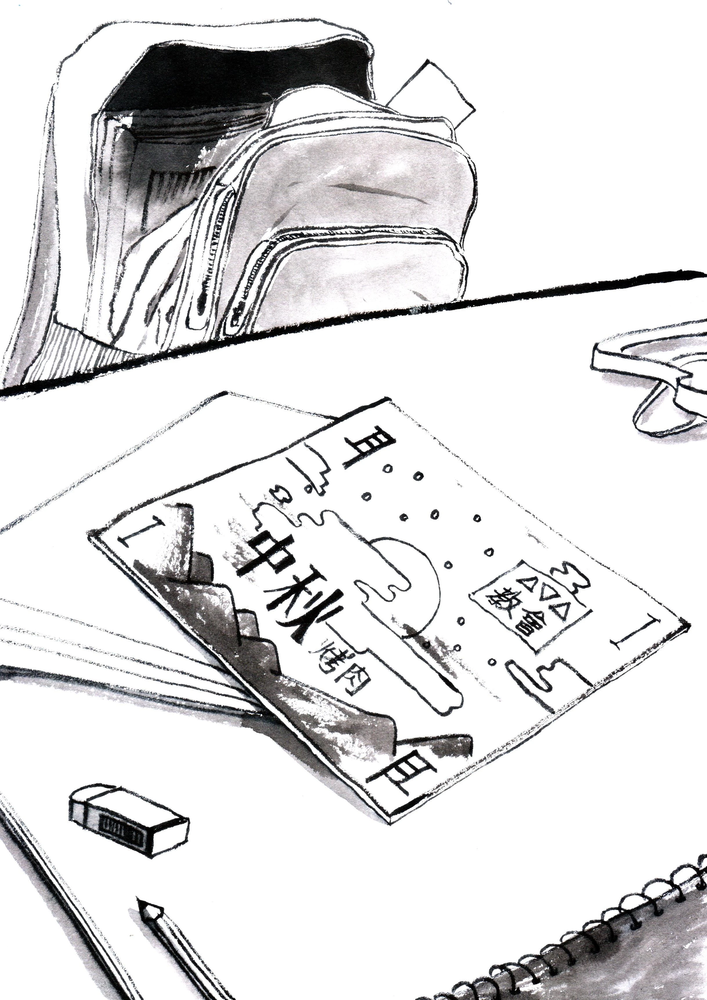

第7章

正在整理回家書包的徐心昀，看著安靜躺在書包裡的教會中秋節烤肉邀請卡，終於記起這週的她還肩負了一個艱鉅的任務。只不過一週過去了，徐心昀仍舊還沒決定好是否要拿著它去邀請劉萱樂。
那張邀請卡就這麼靜靜躺那裡，不吵、不鬧、也從不催促自己將它送出去。她十分懷疑就算自己一直將它留到明年中秋節，它也不會跳出來跑去跟父母或教會的輔導告狀。
「心昀，你收拾好了沒？我好餓啊，等一下先陪我去買點吃的！」劉萱樂的聲音在身旁響起，打斷了徐心昀猶豫不決的思緒。
「馬上！」徐心昀看了邀請卡最後一眼，突然覺得那張應該被拿去邀請劉萱樂的邀請卡，似乎正在邀請著自己。最終，徐心昀趁著關上書包之際，快速的將邀請卡拿出來塞進口袋裡。
劉萱樂並沒有注意到徐心昀的小動作，見對方背上書包，便先一步走出教室。
徐心昀站在小七門口，等著正在結帳的劉萱樂，右手伸進口袋裡，感受著那張卡片在指尖的觸感，彷彿可以在平滑的紙卡上面，摸出等一下的行動計劃。
劉萱樂走出小七門口，手裡拿著一包已經開封過的愛心牛奶球麵包，朝徐心昀舉了舉：「你要不要來一點？」
看著包裝上面的小乳牛卡通圖，徐心昀搖了搖頭。還記得國小時上面是哆啦A夢，沒想到才幾年就換了一個圖案。雖然味道還是一樣的熟悉，但她卻很少再去吃換過包裝圖案的愛心牛奶球。
「是嗎，我怎麼記得你以前很愛吃這個？」劉萱樂塞了一塊牛奶球麵包進嘴巴，含糊不清的問道。
「等一下回家就要吃飯了，現在就先不吃東西了。」徐心昀心不在焉的回答，內心卻不斷思量什麼時候把邀請卡遞出去合適。也不知道場面會不會很尷尬。劉萱樂會拒絕嗎？會覺得我像林恆陽一樣煩嗎？會不會之後我就像換了包裝的愛心牛奶球，雖然我沒有變，但她卻漸漸不想跟貼上「會拉人去教會」標籤的我往來？
吃完一整包牛奶球的劉萱樂，疑惑的看向今天格外安靜的徐心昀：「心昀，你今天怎麼了？從放學後就一直不怎麼說話，在想什麼嗎？」
徐心昀的右手依舊在口袋裡，緊緊攥著邀請卡。她不知道為什麼林恆陽能輕易說出的話語，卻總是在他嘴裡繞了一圈後，又落回胃裡。
「呃、就是，」深深吸了一口氣，徐心昀彷彿用盡了全身的力氣，才吐出一句簡單的邀請：「那個、星期天晚上，我的教會不是有烤肉活動嗎？不知道你有沒有空，要不要一起來參加？」手從口袋裡伸出，緊緊捏住邀請卡的一角，帶著自己也說不明的期待道：「除了烤肉以外，還有唱歌比賽。我想說你是熱音社的，可能會有興趣。」
劉萱樂伸手接過邀請卡，來回的仔細翻看。那是一張淡橙色的紙卡，一面印著活動的詳細信息，包括活動內容、時間、地點等等，另一面則附上一段小小的文字：「祂造月亮星宿管黑夜，因祂的慈愛永遠長存。[1]」邊緣繪製著一輪明月，和滿天繁星點綴其間。右下角的地方，隱約可見徐心昀緊緊攥住留下的印痕，無聲的傾訴她在剛剛的那幾分鐘內，是多麼的緊張和糾結。
「那個，」劉萱樂遲疑道：「我那天晚上可能會有事，沒有辦法去欸。」雖然對於徐心昀的邀請沒有太大的反感，但是如果是教會活動的話，她內心還是比較抗拒的。她覺得一個非基督徒去到教會這麼一個宗教場所會很奇怪，擔心會與裡面的基督徒們格格不入，更擔心去了會不會被牧師拉著要求受洗信教。
「那好吧。」徐心昀語帶輕鬆，假裝不甚在意：「沒關係，也怪我太晚才邀你。但如果你臨時改變主意想去了，記得跟我說喔！」
「沒關係⋯⋯才怪！」然而徐心昀的內心卻不如表面平靜，她在心中無聲的吶喊著：「明明上週才在討論那一天要不要開同學會，怎麼又會突然有事！騙人的爛藉口！！」
「不過說真的，心昀，」似乎是看出身旁人的心情低落，劉萱樂輕聲安慰道：「我很開心你能邀我去教會喔！」
「是嗎？」徐心昀不以為然的撇了撇嘴，並不相信劉萱樂說的話。她看向人行道上斑駁的金點，那是夕陽的餘暉透過濃密的枝葉灑在地面上痕跡。
按照物理老師的說法，那些光點是太陽光穿過葉子縫隙時，所形成上下顛倒、左右相反的針孔成像，只是因為太陽是圓形的，所以呈現出來的成像依然看不出有任何異狀。
徐心昀覺得自己此刻的心情也如同那些光點一樣，雖然表面上她似乎還能保持平靜的跟劉萱樂聊天，但雜亂的思緒卻是上下顛倒、左右相反，讓她難以捉摸。一方面想要尊重對方的選擇，一方面卻又埋怨多年的友誼竟然換來無情的拒絕。她告訴自己被拒絕是很正常的，卻又無法忽視被傾盆冰水澆滅的滿心期待。
「嗡嗡。」坐在書桌前讀書的徐心昀，聽到旁邊手機傳來一陣短促的震動聲，不自覺的停下手中的筆，暫時的逃離枯燥的作業。
點開手機，一則陌生頭像的訊息在IG上傳來。徐心昀思索了一會兒，才想起來對方是白天在學校時剛互相追蹤的林恆陽。他的暱稱是一個「陽」字，後面還帶著一個小太陽的圖案。
「嗨嗨，心昀，我在想下週是不是可以找一天一起吃個午餐？在班上遇到其他基督徒真的很難得，開學後我們都還沒好好聊一聊呢。我們可以找一個安靜的地方，如何？」
手機上的文字讓徐心昀感到一絲心動，下午跟林恆陽聊天時的愉快體驗，仍在心中迴盪，於是她不假思索的在聊天室內敲下兩個字：「好啊」。
林恆陽迅速的回復道：「太好了！那就星期二中午怎麼樣？」
得到肯定的回復後，他又立即送出一串文字：「對了，下午時我們不是說要一起為班上同學代禱嗎？我注意到新來的轉學生王啟年，有點無法融入班上，我覺得我們可以一起為他禱告喔！如果有機會的話，我們還可以一起去關心他。」
剛想答應的徐心昀，忽然想起放學時被好友拒絕的畫面，心中頓時有些氣餒：「關心就算了吧，我又不會。」
林恆陽鼓勵著回覆道：「一起來試試看嘛！其實不用刻意表現什麼，就像平時與朋友聊天時一樣，就當是去交一個新朋友。」
徐心昀仍然感到沮喪：「試過了還不是一樣，根本就不會成功。」當初媽媽也說邀人去教會，就像邀人來家裡一樣簡單。
林恆陽敏銳的察覺到徐心昀似乎另有所指：「你曾經有過類似的經驗？願意說來聽聽嗎？」
徐心昀遲疑了一下，最終決定把放學時的事告訴林恆陽，包括那是她第一次邀人去教會。
林恆陽驚訝的回應：「哇，很棒耶！聽起來比我第一次邀人到教會時的情況好多了。」
徐心昀意外的讀著對方傳來的肯定與鼓勵。她原本以為林恆陽會說教似的告訴她哪裡做錯了，或是應該要講什麼才能更容易吸引到人。
然而透過冰冷的螢幕，徐心昀竟然能感受到林恆陽散發出的溫暖。他暱稱中的那顆小太陽，似乎也不再只是一個單純的圖案而已。
「其實我第一次被拒絕時，對方不覺得他需要一個信仰，甚至反過來質問我為什麼基督徒總是執著於帶人去教會。那時我也曾懷疑過自己是不是根本就不適合傳福音，會不會因為我的邀請，讓其他人更不願意踏入教會。但後來教會的輔導告訴我，一個人是否願意接受福音是 神的工作。我們的任務只是邀請人來認識上帝，讓 神來完成祂的工作。」
看著手機裡的字句，每一個字分開來雖然都平淡無奇，但合在一起卻蘊含一股難以形容的力量，在徐心昀心中蔓延開來。這還是她第一次聽到有人從這個角度詮釋傳福音。
「我覺得只要我們努力過了，就算失敗了，在 神眼中也都是寶貴的喔！所以心昀，下次我們再一起加油！」
「嗯，謝謝你。」徐心昀放下手機，目光偶然落在那天從地下室拿回來的書上。隨手翻開，滿是照片的一頁毫無預警的映入眼底。左上角的一張照片，正是上週歷史課時老師秀出來的照片，上面有著「IXΘYΣ」的希臘文字。
然而一個禮拜過去了，徐心昀還是不知道這個「IXΘYΣ」到底代表著什麼意思。她依稀記得，在地下城中也曾遇見過這串希臘文字。
隨著這段模糊的記憶浮現，地下城中的點點滴滴，也慢慢回流到腦海之中。徐心昀突然意識到，林恆陽從某種層面上來說，真的與地下城中的那些人很像，尤其特別的像使徒行傳裡的巴拿巴。他們都真實的經歷過 神，並試圖用自己的生命，去改變別人的生命。
不像自己一樣，總是游離在被 神遺忘的角落。
徐心昀不知道要怎麼樣才能找到 神，身為二代基督徒的她，一直以來都覺得牧師、傳道口中的上帝，像是水中的倒影般，怎麼抓也抓不著。她回憶著曾聽過的每一個見證分享，似乎所有的人都是在困苦無助中經歷到 神。她不理解為何 神只會在絕望中出現，而對於那些心滿意足的人卻不為所動。但她想知道，如果她把自己丟入一個絕望的死胡同裡， 神是否還會繼續對她視而不見，還是會如同她所羨慕的人一樣，能親身感受到 神奇妙的同在。
盯著手上的書，徐心昀不確定自己是否還有機會再次回到地下城中，但她本持著試一試也不會少塊肉的心態，再度來到地下室。
一樣捧著那本書，一樣任由自己的思緒飛往看不見盡頭的迷霧當中。只是憑藉著本能的讓腳步帶領著自己，走向儲藏室的深處。
註解：
[1] 詩篇136:9